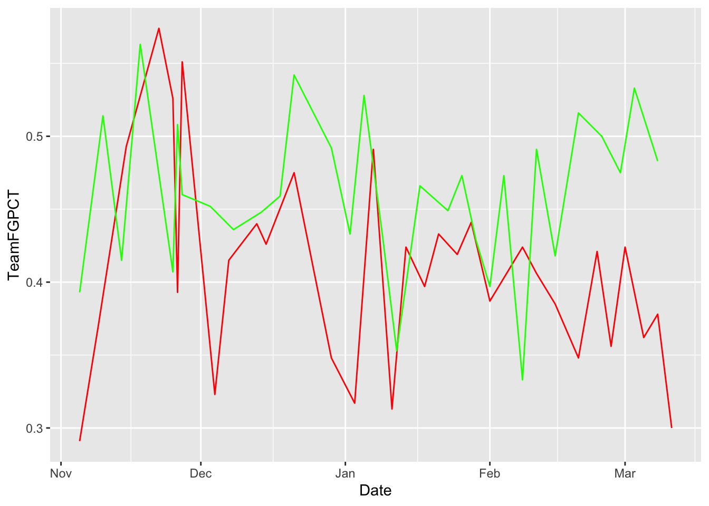
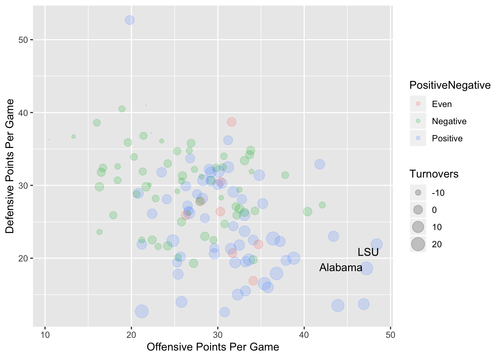
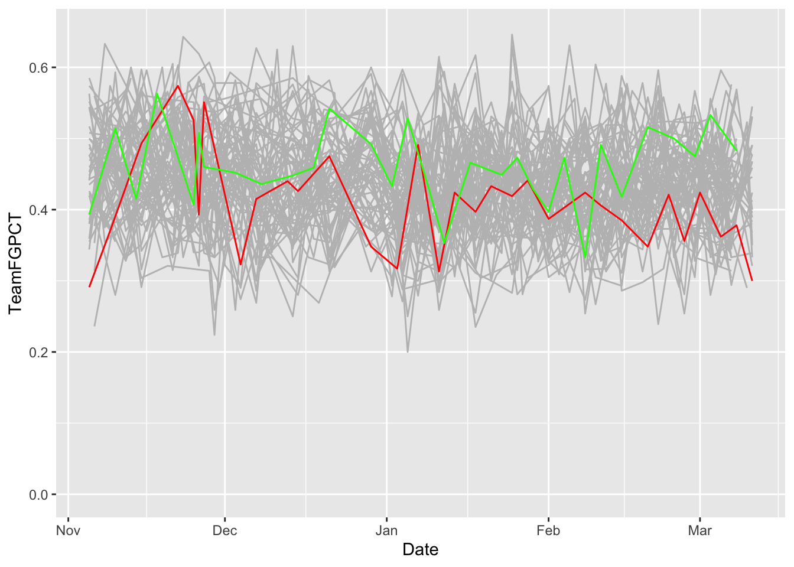
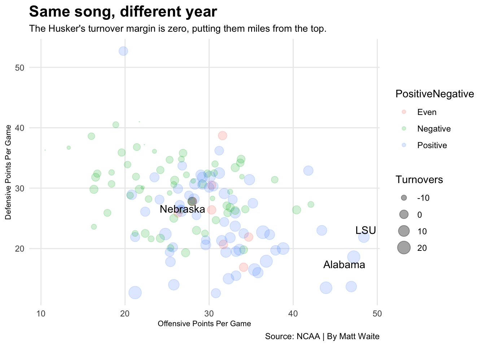
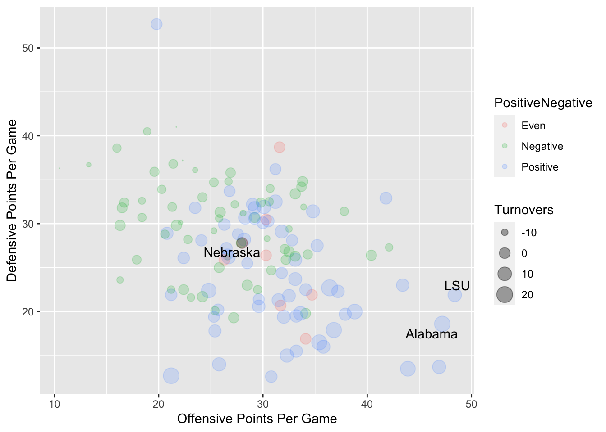
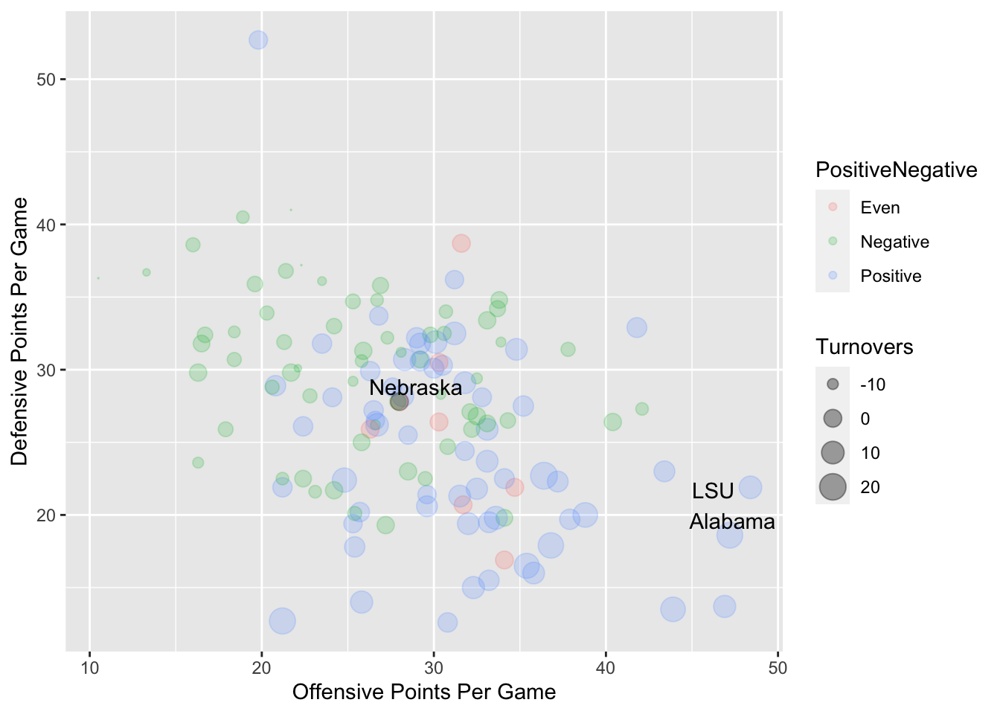

Chapter 23 Bubble charts
Here is the real talk: Bubble charts are hard. The reason they are hard is not because of the code, or the complexity or anything like that. They’re a scatterplot with magnitude added – the size of the dot in the scatterplot has meaning. The hard part is seeing when a bubble chart works and when it doesn’t.
If you want to see it work spectacularly well, watch a semi-famous Ted Talk by Hans Rosling from 2006 where bubble charts were the centerpiece. It’s worth watching. It’ll change your perspective on the world. No seriously. It will.
And since then, people have wanted bubble charts. And we’re back to the original problem: They’re hard. There’s a finite set of circumstances where they work.
First, I’m going to show you an example of them not working to illustrate the point.
I’m going to load up my libraries: tidyverse per usual, rvest to get some data (we’ll discuss rvest in greater detail in an upcoming chapter) and ggrepel because I end up using it every time I do a scatterplot.
## Loading required package: xml2##
## Attaching package: 'rvest'## The following object is masked from 'package:Hmisc':
##
## html## The following object is masked from 'package:purrr':
##
## pluck## The following object is masked from 'package:readr':
##
## guess_encodingSo for this example, I want to look at Nebraska’s offense in the 2019 season. It … hasn’t gone well. And typical of Nebraska teams for the last decade, they’re turning the ball over a lot. So given the number of turnovers, how does Nebraska compare to other teams in the FBS?
I’m going to create a scatterplot yards per game on the X axis and points per game on the Y. They’re pretty highly correlated with each other. And then I’m going to make the dot the size of the turnovers – the bubble in my bubble charts.
Using Rvest, I’m going to grab total offense rankings, scoring offense rankings and turnover rankings and then merge them together with just the fields I need. This will all get explained more thoroughly coming up, but that’s what this block of code does. When it’s done, I’ll have a dataframe called offense which I’ll use to build my bubble chart.
yardsurl <- "http://cfbstats.com/2019/leader/national/team/offense/split01/category10/sort01.html"
yards19 <- yardsurl %>%
read_html() %>%
html_nodes(xpath = '//*[@id="content"]/div[2]/table') %>%
html_table()
yards19 <- yards19[[1]] %>% select(Name, `Yards/G`)
pointsurl <- "http://cfbstats.com/2019/leader/national/team/offense/split01/category09/sort01.html"
points19 <- pointsurl %>%
read_html() %>%
html_nodes(xpath = '//*[@id="content"]/div[2]/table') %>%
html_table()
points19 <- points19[[1]] %>% select(Name, `Points/G`)
turnoversurl <- "http://cfbstats.com/2019/leader/national/team/offense/split01/category12/sort01.html"
turnovers19 <- turnoversurl %>%
read_html() %>%
html_nodes(xpath = '//*[@id="content"]/div[2]/table') %>%
html_table()
turnovers19 <- turnovers19[[1]] %>% select(Name, `Total Lost`)
offense <- yards19 %>%
left_join(points19, by=c("Name")) %>%
left_join(turnovers19, by=c("Name"))A bubble chart is just a scatterplot with one additional element in the aesthetic – a size. Here’s the scatterplot version.

As expected, yards per game pretty tightly predicts points per game, but you could have guessed that without a chart. So let’s add the size element.

Eh. What does this chart tell you? Trick question, there’s not much new here. The dots are too big. Also, we can’t see when they overlap. We can fix that by adding an alpha element outside the aesthetic – alpha in this case is transparency – and we can manually change the size of the dots by adding scale_size and a range.
ggplot() + geom_point(data=offense, aes(x=`Yards/G`, y=`Points/G`, size=`Total Lost`), alpha=.2) + scale_size(range = c(.1, 15), name="Turnovers")
Before we do any more work, let’s return to the earlier question: What story does this tell? Can you discern a story from the bubbles? Are teams with lots of turnovers doing poorly and teams with few turnovers doing well? The problem is, you can’t really tell. So this is a dead end for a bubble chart. If you get a big mess, it’s a dead giveaway that you probably don’t have a bubble chart.
So let’s look at something else. Let’s look at something that isn’t directly correlated – we’ll look at offensive points per game vs defensive points per game.
I’m going to edit the same rvest code to grab those points per game stats and merge it all together. When it’s done, I’ll have a dataframe called football and we can look at where good teams fall on the chart with turnover margin as a scaled dot.
ourl <- "http://cfbstats.com/2019/leader/national/team/offense/split01/category09/sort01.html"
o19 <- ourl %>%
read_html() %>%
html_nodes(xpath = '//*[@id="content"]/div[2]/table') %>%
html_table()
o19 <- o19[[1]] %>% select(Name, `Points/G`)
durl <- "http://cfbstats.com/2019/leader/national/team/defense/split01/category09/sort01.html"
d19 <- durl %>%
read_html() %>%
html_nodes(xpath = '//*[@id="content"]/div[2]/table') %>%
html_table()
d19 <- d19[[1]] %>% select(Name, `Points/G`)
turnoversurl <- "http://cfbstats.com/2019/leader/national/team/offense/split01/category12/sort01.html"
turnovers19 <- turnoversurl %>%
read_html() %>%
html_nodes(xpath = '//*[@id="content"]/div[2]/table') %>%
html_table()
turnovers19 <- turnovers19[[1]] %>% select(Name, Margin)
football <- o19 %>%
left_join(d19, by=c("Name")) %>%
left_join(turnovers19, by=c("Name")) %>%
rename(`Offensive Points Per Game` = `Points/G.x`, `Defensive Points Per Game`=`Points/G.y`)Now we can do the bubble chart.
ggplot() + geom_point(data=football, aes(x=`Offensive Points Per Game`, y=`Defensive Points Per Game`, size=Margin), alpha=.2) + scale_size(range = c(0, 6), name="Turnovers")
Better! Teams are spread out a little more. Bottom right quadrant – the good defense, good offense quadrant – have some large dots. The upper left quadrant – bad defense, bad offense – have some very small dots, meaning they have a really terrible turnover margin.
But what would make this chart better – and what you saw in the Rosling video – is color. What if we colored the dots by if they were above or below zero? Meaning, do they have a positive or negative turnover margin? We can do that with a quick mutate and a case_when statement.
football <- football %>% mutate(PositiveNegative = case_when(
Margin > 0 ~ "Positive",
Margin < 0 ~ "Negative",
Margin == 0 ~ "Even"
))Now we can add color=PositiveNegative to the aesthetic and our dots will be colored by if they are positive, negative or zero.
ggplot() + geom_point(data=football, aes(x=`Offensive Points Per Game`, y=`Defensive Points Per Game`, size=Margin, color=PositiveNegative), alpha=.2) + scale_size(range = c(0, 6), name="Turnovers")
Now we’re getting somewhere. What’s the story that this chart tells? Blue dots – positive turnover margins – are all drifting toward that good offense, good defense quadrant. Green dots – negative turnover margins – are drifting toward that bad defense, bad offense quadrant.
Let’s add some annotations. Let’s look at the top two turnover margin teams and where they come out.
ggplot() +
geom_point(data=football, aes(x=`Offensive Points Per Game`, y=`Defensive Points Per Game`, size=Margin, color=PositiveNegative), alpha=.2) +
geom_text_repel(data=topteams, aes(x=`Offensive Points Per Game`, y=`Defensive Points Per Game`, label=Name)) +
scale_size(range = c(0, 6), name="Turnovers")
No surprise there. What about Nebraska?
ggplot() +
geom_point(data=football, aes(x=`Offensive Points Per Game`, y=`Defensive Points Per Game`, size=Margin, color=PositiveNegative), alpha=.2) +
geom_text_repel(data=topteams, aes(x=`Offensive Points Per Game`, y=`Defensive Points Per Game`, label=Name)) +
geom_point(data=nu, aes(x=`Offensive Points Per Game`, y=`Defensive Points Per Game`, size=Margin), alpha=.2) +
geom_text_repel(data=nu, aes(x=`Offensive Points Per Game`, y=`Defensive Points Per Game`, label=Name)) +
scale_size(range = c(0, 6), name="Turnovers")
Sadly, no surprise there either.
The last things we need to do? Add some labels, apply our finishing touches.
ggplot() +
geom_point(data=football, aes(x=`Offensive Points Per Game`, y=`Defensive Points Per Game`, size=Margin, color=PositiveNegative), alpha=.2) +
geom_text_repel(data=topteams, aes(x=`Offensive Points Per Game`, y=`Defensive Points Per Game`, label=Name)) +
geom_point(data=nu, aes(x=`Offensive Points Per Game`, y=`Defensive Points Per Game`, size=Margin), alpha=.2) +
geom_text_repel(data=nu, aes(x=`Offensive Points Per Game`, y=`Defensive Points Per Game`, label=Name)) +
scale_size(range = c(0, 6), name="Turnovers") +
labs(title="Same song, different year", subtitle="The Husker's turnover margin is zero, putting them miles from the top.", caption="Source: NCAA | By Matt Waite") + theme_minimal() +
theme(
plot.title = element_text(size = 16, face = "bold"),
axis.title = element_text(size = 8),
plot.subtitle = element_text(size=10),
panel.grid.minor = element_blank()
)